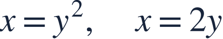
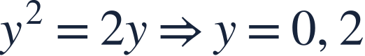
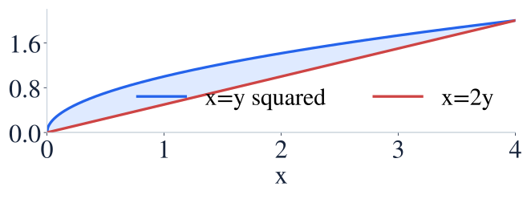
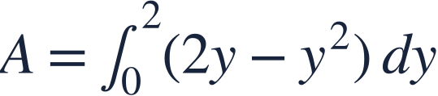
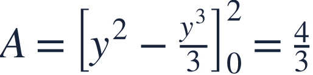
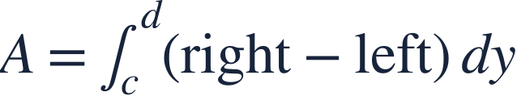
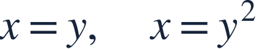

Area with horizontal slices
가로 단면의 넓이

Horizontal slices can simplify a region when x is naturally written in terms of y.
x가 y의 식으로 주어지면 가로 단면으로 영역을 더 쉽게 다룰 수 있습니다.

Horizontal slices can simplify a region when x is naturally written in terms of y.
x가 y의 식으로 주어지면 가로 단면으로 영역을 더 쉽게 다룰 수 있습니다.

With horizontal slices, use right minus left and integrate with respect to y.
가로 단면에서는 오른쪽에서 왼쪽을 빼고 y에 대해 적분합니다.

For 0≤y≤2, the right boundary is x=2y and the left boundary is x=y².
0≤y≤2에서 오른쪽 경계는 x=2y, 왼쪽 경계는 x=y²입니다.
Both boundary positions are x-coordinates at the same height y.
같은 높이 y에서 두 경계의 x좌표를 뺍니다.

A horizontal slice has thickness dy.
가로 단면의 두께는 dy입니다.

The limits are y-values, not x-values.
적분구간은 x값이 아니라 y값입니다.

Do not mix a horizontal width expression with x-limits or dx.
가로 폭의 식에 x 구간이나 dx를 섞지 마세요.

Use horizontal slices to find the enclosed area.
가로 단면으로 둘러싸인 넓이를 구하세요.